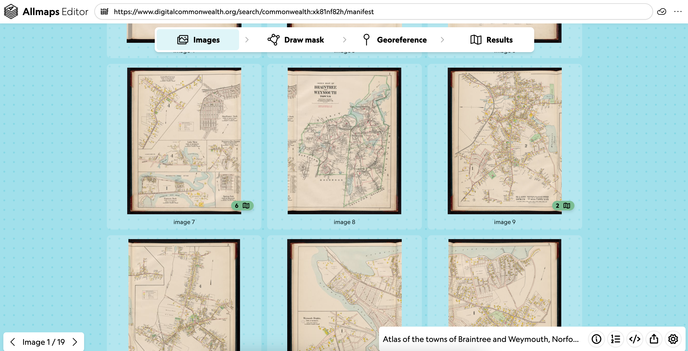
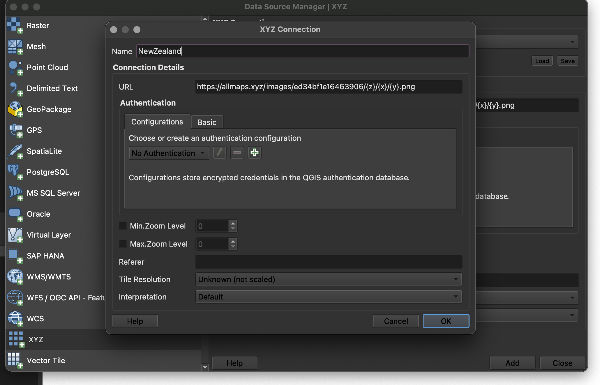

Lesson 4: Doing more with Allmaps
This lesson introduces some additional applications in the Allmaps application, including Viewer, as well as other transformation types. We'll also work together to make a map mosaic of urban atlases that we can all view at the end of the workshop.
Allmaps Viewer
Allmaps Viewer is used to view georeferenced maps in Allmaps. Similar to the Results tab in the Editor, you can see the map overlaid on a web map.
The Viewer also includes additional tools that let you customize the appearance and functionality of your map.
Common tools (found at the bottom of the screen) include sliders that control layer transparency/opacity and background removal.
Background removal is especially useful with historical maps—it removes the blank paper and allows the cartographic information to shine.

Keyboard shortcuts:
Space– Toggle transparency on/offB– Toggle background removalM– Display the maskT– Change the transformation algorithmG– Display a grid over the imageD– Cycle display of distortions: surface deformation, angle distortion, or none
Viewing mosaiqued atlases
IIIF manifests often contain objects with multiple maps. Atlases are the quintessential example.
At LMEC, we use Allmaps to work with atlases all the time. Check out this atlas of Braintree, MA in Allmaps Editor, georeferenced by former LMEC interns. Green indicates sheets that are already georeferenced, and the number indicates the number of masks associated with that map image:

Yellow warning symbols indicate maps with masks but no georeferencing yet, and red warning symbols indicate a map with errors in its GCPs or mask.
Try opening this atlas in Allmaps Viewer to see how stitched maps are displayed.
As a reminder, you can open a map in Allmaps Viewer using the Drawers in the bottom right-hand side of the screen.
When working with multi-sheet objects, the following keystrokes might help:
[and]: Cycle through mapsRight Click: Change map layer order
Changing the transformation algorithm
As we covered in Lesson 2, ground control points (GCPs) define locations where features match across old and new maps. A transformation algorithm uses these points to warp the image accordingly.
Cycle through algorithms using T.
Different algorithms will produce different results. Some algorithms, like Thin Plate Spline, will stretch and distort the image more than others, while algorithms like Polynomial maintain a high threshold for distortion:

You can set the transformation type in the GCP List Drawer of Allmaps Editor. Feel free to try it out and see what happens!
Putting it all together
Now let’s try georeferencing and mosaiquing an atlas together! We’ll use this Sanborn atlas of Seattle, WA from the Library of Congress as an example.
Open the atlas
First, open the atlas in Allmaps Editor.
To open the atlas, recall that you must paste the IIIF manifest into the input box. Digital collections at the Library of Congress are all IIIF-compliant, and their IIIF manifests near the bottom of the object record.
Here’s the IIIF manifest for the atlas we’re georeferencing:
https://www.loc.gov/item/sanborn09315_026/manifest.json
Claim a plate
Visit this Google Sheet and claim an atlas plate to georeference. Depending on how many people are in the workshop, you may be able to claim more than one.
Note that the “Image number” corresponds to the number in Allmaps Editor list, not necessarily the number on the map itself.
When choosing a plate:
- You don’t want to georeference the title sheets or index sheet
- Use the
image #underneath each map image as the indicator of which sheet you have chosen
Georeference
Georeference your map(s)! Follow the best practices for ground control points described in the previous lesson.
View and refine
When everybody is one, we’ll view the finished product in Allmaps Viewer.
Using XYZ tiles in QGIS
Allmaps provides a free XYZ tile server, allowing you to bring georeferenced maps directly into GIS software like QGIS.
In QGIS, use the Add XYZ Layer tool:

Copy the XYZ Tile URL from the Allmaps Editor Share tools:

Then create a new XYZ Connection in QGIS and paste in the URL. No other changes are usually needed.

Now you can use your georeferenced map directly in desktop GIS!

You can even use the Export tool to save the result as a GeoTIFF, a standard format for georeferenced images.
More info on the Allmaps Tile Server is available in this Observable notebook.
More you can do
What will you do with your georeferenced maps?
Here are just a few exciting examples:
- Stories from Urban Atlases of Waltham
- Atlascope
- Architectural Drawings in Allmaps
- Georeferenced Aerial Photographs
To go even further, explore the collection of Allmaps Observable Notebooks:
- Use IIIF maps in MapLibre, Leaflet, or OpenLayers
- Draw vector GeoJSON layers on top of Allmaps
- Georeference based on toponyms (place names)
- Learn more about the code and architecture of Allmaps